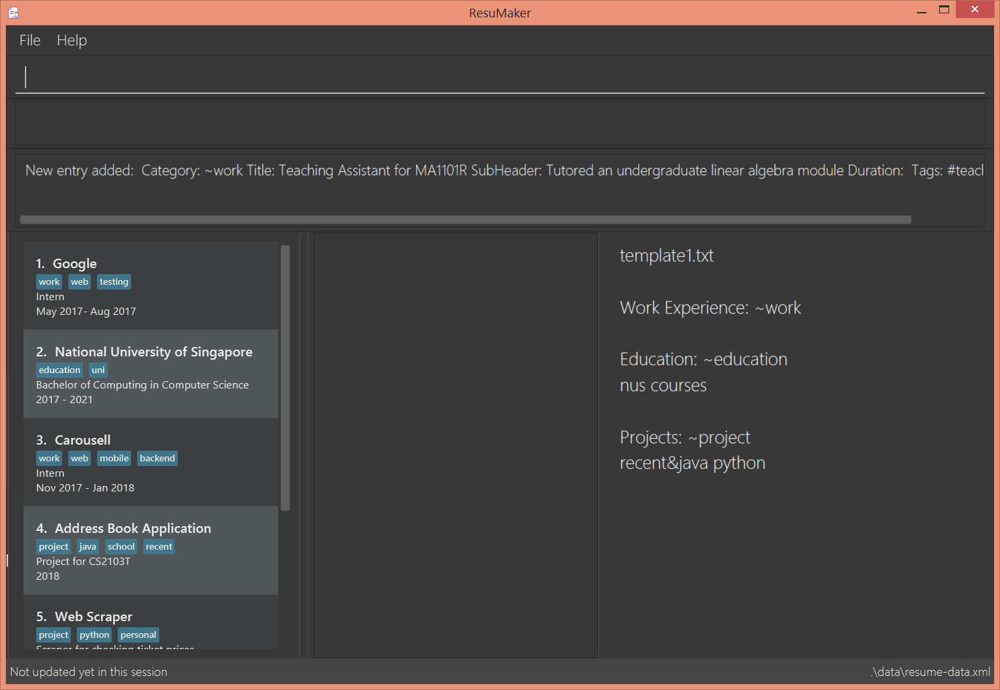

By: CS2103-W-17-1 Since: August 2018 Licence: MIT
- 1. Introduction
- 2. Quick Start
- 3. Features
- 3.1. Viewing help :
help - 3.2. Adding an entry:
addEntry - 3.3. Adding a bullet point:
addBullet - 3.4. Editing a bullet point:
editBullet - 3.5. Listing entries :
listEntry - 3.6. Viewing a particular entry :
viewEntry - 3.7. Editing an entry :
editEntry - 3.8. Deleting an entry:
deleteEntry - 3.9. Creating a SoC / NUS Event (Project / Work Experience / Skill):
nus - 3.10. Viewing SoC awards:
fetch-awards - 3.11. Tag related functions:
tag - 3.12. Listing entered commands :
history - 3.13. Viewing template :
viewtemplate - 3.14. Generating Resume :
make - 3.15. Clearing all entries :
clear - 3.16. Exiting the program :
exit - 3.17. Saving the data
- 3.18. Encrypting data files
[coming in v2.0]
- 3.1. Viewing help :
- 4. FAQ
- 5. Command Summary
1. Introduction
Do you find the need to maintain multiple versions of your resume?
Perhaps you find youself reorganising your resumes before making a job application?
If so - welcome to ResuMaker: a fast and flexible resume generator aimed at computer science students
Unlike most resume generation webapps, ResuMaker tailors your resume to fit the specific requirements of a job.
It can also pick up contextual awareness about your world - with out-of-the-box support for the National University of Singapore’s School of Computing.
Interested? Jump to the Section 2, “Quick Start” to get started.
With ResuMaker, let your skills document themselves.
2. Quick Start
-
Ensure you have Java version
9or later installed in your Computer. -
Download the latest
resumaker.jarhere. -
Copy the file to the folder you want to use as the home folder for your Address Book.
-
Double-click the file to start the app. The GUI should appear in a few seconds.
 -
Type the command in the command box and press Enter to execute it.
e.g. typinghelpand pressing Enter will open the help window. -
Try out the following examples:
-
listEntry~work #java: Lists all the Work related Entries tagged withjava -
addEntry~work#java t/The Source Enterprise s/Data Science Intern d/ May 2010 - Aug 2010: Adds a new Entry classified under Work Experiences, with the given title, subheader and duration -
deleteEntry3: deletes the 3rd Entry shown in the current Entry list -
exit: exits the app
-
-
Refer to Section 3, “Features” for the full details of all commands.
3. Features
Command Format
-
Words in
UPPER_CASEare the parameters to be supplied by the user e.g. inaddEntry ~SECTION #TAGNAME t/TITLE, [s/SUBHEADER],SECTION,TAGNAME,TITLEare parameters which can be used asaddEntry t/The Source Enterprise. -
Items in square brackets are optional e.g
t/TITLE [s/SUBHEADER]can be used ast/The Source Enterpriseor ast/The Source Enterprise s/Java programmer. -
Items with
… after them can be used multiple times including zero times e.g.[t/TAG]…can be used ast/friend,t/friend t/familyetc. -
Parameters can be in any order e.g. if the command specifies
t/TITLE s/SUBHEADER,s/SUBHEADER T/TITLEis also acceptable.
3.1. Viewing help : help
Format: help
3.2. Adding an entry: addEntry
Adds a person to the address book
Format: addEntry ~SECTION [#TAG]… t/TITLE [s/SUBHEADER] d/DURATION
| An entry can have any number of tags (including 0) An entry contains description, which can be added using addDescription as a separate command |
Examples:
-
addEntry ~experience #java t/The Source Enterprise s/Java Programmer intern d/ May 2010 - Aug 2010 -
addEntry ~awards #java
3.3. Adding a bullet point: addBullet
Adds a bullet point under the description of an entry in the ResuMaker
Format: addBullet CONTENTTOADD
Examples:
-
addBullet implement scalable application for data visualization using java
3.4. Editing a bullet point: editBullet
edits a bullet point under the description of an entry in the ResuMaker
Format: editBullet INDEX EDITTEDCONTENT
Examples:
-
editBullet 0 implement scalable application for data visualization using java
3.5. Listing entries : listEntry
list particular entries in the ResuMaker. Both section and tags are optional - running with no arguments will display all entries.
Format: listEntry [~SECTION] [#TAG]…
Examples:
-
listEntry ~education java
3.6. Viewing a particular entry : viewEntry
views a particular entry in the ResuMaker.+
Format: vieWEntry INDEX
Examples:
-
viewEntry 2
3.7. Editing an entry : editEntry
Edits an existing entry in the ResuMaker.
Format: editEntry INDEX [t/TITLE ] [s/SUBHEADER] [d/DURATION] [t/TAG]…
Examples:
-
`editEntry 1 t/ R company t/ C` + edits the entry at index 1 by replacing its title as R company and replace all its tags by C
3.8. Deleting an entry: deleteEntry
Finds persons whose names contain any of the given keywords.
Format: deleteEntry INDEX
Examples:
-
list
delete 2
Deletes the 2nd entry in the address book. -
list ~education
delete 1
Deletes the 1st entry displayed under education section
3.9. Creating a SoC / NUS Event (Project / Work Experience / Skill): nus
Auto-populates a resume Entry based on a matching SoC / NUS Event.
Format: nus EVENT_NAME
The EVENT_NAME can be an Event’s full name (Mathematics and Computer Science Double Degree Programme), its acronym (math - cs ddp), or even a
partially matching phrase (math - comp sci double deg prog)
|
Examples:
-
nus orb
Creates a Project Entry forOrbital -
nus hack n roll
Creates a Project Entry forHack n Roll -
nus ta cs2040
Creates a Work Experience entry forTeaching Assistant CS2040
| Slang and acronyms must be correctly configured in application data. ResuMaker ships with correct data for commonly used slang and acronyms. |
3.10. Viewing SoC awards: fetch-awards
Lists all awards at SoC in a numbered list.
Format: fetch-awards or fetch-awards INDEX
The latter format adds the specified award as a resume Entry.
3.11. Tag related functions: tag
These are functions to help you manage your tags; namely to view and edit the relevant tags and entries.
3.11.1. Viewing currently active tags: tag status
Lists all tags currently active, and will be generated in the resume.
Format: tag status lists all the corresponding tags and categories that will appear in the resume.
3.11.2. Listing entries under specific tags: tag list or tag ls
List all entries under specific tags (space separated).
By default, if a tag is not given, all the tags will be displayed.
Format: tag ls list all the tags and the relevant entries for each tag.
Format: tag ls ~work ~projects #java list all the ~work and ~project entries tagged with #java
Entries displayed will be accompanied with their relevant entry id.
3.11.3. Add particular tag to entry: tag add
Add tags (space separated) to particular entry (identified by index).
Duplicated tags will be ignored
Format: tag add 10 ~work #java add tag #java and category ~work to entry 10.
3.11.4. Remove particular tag from entry: tag remove or tag rm
Remove tags (space separated) from a particular entry (identified by index).
By default, if no tags given, all tags will be removed from the entry.
Format: tag rm 1 ~work #java remove category ~work and tag #java from entry 1.
Format: tag rm 10 remove all tags and categories from entry 10.
3.11.5. Retagging a particular entry: tag retag or tag rt
Remove all current tags and replace it with current tags (space separated).
Format: tag rt 1 ~work #java remove all tags and categories from entry 1, adding tag #java and category ~work to entry 1.
3.12. Listing entered commands : history
Lists all the commands that you have entered in reverse chronological order.
Format: history
3.13. Viewing template : viewtemplate
Gives a preview of the template.
Format: viewtemplate FILEPATH
Examples:
-
viewtemplate google.txt
Previews the template specified ingoogle.txt
|
Pressing the ↑ and ↓ arrows will display the previous and next input respectively in the command box. |
3.14. Generating Resume : make
Generates a Resume in Markdown format, using either the template with the given file name or a default format.
Format: make or make TEMPLATE_FILENAME
|
The user can supply the name of a template file they created themselves or a SoC-focused preset template supplied by the program. |
Examples:
-
make
Generates a Resume based on the default format using saved entries. -
make SEP.txt
Generates a Resume based on the 'SEP.txt' template file (which could be user created or a preset) using saved entries.
3.15. Clearing all entries : clear
Clears all entries from the address book.
Format: clear
3.16. Exiting the program : exit
Exits the program.
Format: exit
3.17. Saving the data
Address book data are saved in the hard disk automatically after any command that changes the data.
There is no need to save manually.
3.18. Encrypting data files [coming in v2.0]
{explain how the user can enable/disable data encryption}
4. FAQ
Q: How do I transfer my data to another Computer?
A: Install the app in the other computer and overwrite the empty data file it creates with the file that contains the data of your previous Address Book folder.
5. Command Summary
-
Add
add n/NAME p/PHONE_NUMBER e/EMAIL a/ADDRESS [t/TAG]…
e.g.add n/James Ho p/22224444 e/jamesho@example.com a/123, Clementi Rd, 1234665 t/friend t/colleague -
Clear :
clear -
Delete :
delete INDEX
e.g.delete 3 -
Edit :
edit INDEX [n/NAME] [p/PHONE_NUMBER] [e/EMAIL] [a/ADDRESS] [t/TAG]…
e.g.edit 2 n/James Lee e/jameslee@example.com -
Find :
find KEYWORD [MORE_KEYWORDS]
e.g.find James Jake -
List :
list -
Help :
help -
Select :
select INDEX
e.g.select 2 -
History :
history -
Tag Status:
tag status -
Tag List:
tag ls TAG [MORE_TAGS]
e.g.tag ls ~work #java -
Tag Remove:
tag rm INDEX TAG [MORE_TAGS]
e.g.tag rm 10 ~work #python -
Tag Retag:
tag tg INDEX TAG [MORE_TAGS]
e.g.tag rt 10 ~project #web -
Generate Resume :
make